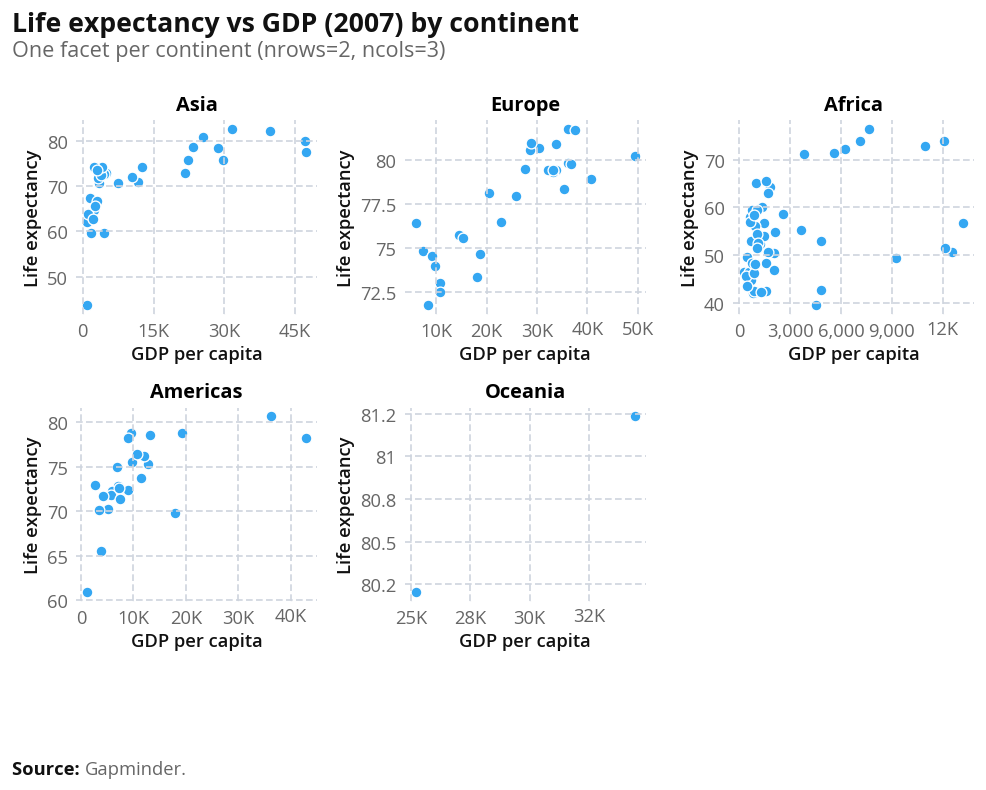

from wbpyplot import wb_plot
import pandas as pd
import numpy as np
gapminder = pd.read_csv("Gapminder Data.csv")
continents = gapminder["continent"].unique().tolist()
# Use one year for a cleaner scatter
gm = gapminder[gapminder["year"] == 2007].copy()Other tips: tabs, subsets, and maps
This page shows how to combine Quarto tabsets with graphs, use data subsets in your figures, and add a simple map example.
Tabs with a graph
Use Quarto’s panel tabset so readers can switch between views. Put the opening ::: {.panel-tabset} before the tabs, then each ### Tab name starts a new tab; close with :::.
Below, the first tab shows a full-dataset scatter plot; the next tabs show the same plot by region (one subset per tab). All use wbpyplot with the Plotly backend.
@wb_plot(
title="Life expectancy vs GDP (2007)",
subtitle="All countries",
note=[("Source:", "Gapminder.")],
palette="wb_categorical",
legend_title="Region",
width=600,
height=800,
backend="plotly",
)
def scatter_full(fig, gm, continents):
for cont in continents:
mask = gm["continent"] == cont
fig.add_scatter(
x=gm.loc[mask, "gdpPercap"],
y=gm.loc[mask, "lifeExp"],
name=cont,
mode="markers",
)
fig.update_layout(xaxis_title="GDP per capita", yaxis_title="Life expectancy")
scatter_full(gm, continents)Subset the data with gm[gm["continent"] == "Africa"] and plot in its own tab.
subset_africa = gm[gm["continent"] == "Africa"]
@wb_plot(
title="Life expectancy vs GDP (2007)",
subtitle="Africa",
note=[("Source:", "Gapminder.")],
width=600,
height=500,
backend="plotly",
)
def scatter_africa(fig, subset_africa):
fig.add_scatter(
x=subset_africa["gdpPercap"],
y=subset_africa["lifeExp"],
name="Africa",
mode="markers",
)
fig.update_layout(xaxis_title="GDP per capita", yaxis_title="Life expectancy")
scatter_africa(subset_africa)Same idea for Europe: filter, then plot in a tab.
subset_europe = gm[gm["continent"] == "Europe"]
@wb_plot(
title="Life expectancy vs GDP (2007)",
subtitle="Europe",
note=[("Source:", "Gapminder.")],
width=600,
height=400,
backend="plotly",
)
def scatter_europe(fig, subset_europe):
fig.add_scatter(
x=subset_europe["gdpPercap"],
y=subset_europe["lifeExp"],
name="Europe",
mode="markers",
)
fig.update_layout(xaxis_title="GDP per capita", yaxis_title="Life expectancy")
scatter_europe(subset_europe)Subsets in one figure
You can also plot multiple subsets in a single figure by filtering and passing each subset to the same plotting logic (e.g. one series per continent). The main wbplot-style examples do this: one scatter with all continents, each continent a different color. Subsetting is just df[df["col"] == value] or df[df["year"].between(2000, 2010)]; then use the subset in your fig.add_scatter or ax.scatter calls.
Subplots (nrows, ncols)
Use nrows and ncols in @wb_plot to create a grid of subplots (Matplotlib backend). The decorator creates a figure with nrows × ncols axes and passes an array axs to your function: use axs[0], axs[1], … for a single row, or axs[0, 0], axs[0, 1], axs[1, 0], axs[1, 1] for a 2×2 grid. You can iterate with for ax in axs.flat:.
Below, the same scatter (GDP vs life expectancy, 2007) is split by continent: one facet per continent using nrows=2, ncols=3. Each panel shows one continent’s data; the sixth panel is hidden because there are five continents.
@wb_plot(
title="Life expectancy vs GDP (2007) by continent",
subtitle="One facet per continent (nrows=2, ncols=3)",
note=[("Source:", "Gapminder.")],
nrows=2,
ncols=3,
width=1000,
height=800,
)
def scatter_by_continent(fig, axs, gm, continents):
for i, cont in enumerate(continents):
ax = axs.flat[i]
mask = gm["continent"] == cont
ax.scatter(gm.loc[mask, "gdpPercap"], gm.loc[mask, "lifeExp"])
ax.set_xlabel("GDP per capita")
ax.set_ylabel("Life expectancy")
ax.set_title(cont)
# Hide the unused 6th panel (5 continents, 6 panels)
axs.flat[len(continents)].set_visible(False)
scatter_by_continent(gm, continents)
Colours and palettes
You can pass palette= to @wb_plot to control colors. Available palettes include:
Categorical (discrete groups, e.g. scatter/bar by category):
wb_categorical— general purpose (up to 9 colors)wb_region— World Bank regions (WLD, NAC, LCN, SAS, MEA, ECS, EAS, SSF, …)wb_income— HIC, UMC, LMC, LICwb_gender— male, female, diversewb_urbanisation— rural, urbanwb_age,wb_binary,wb_total,wb_pillars, etc.
Sequential (ordered values, good for maps and choropleths):
wb_seq_bad_to_good— light (bad) → dark blue (good)wb_seq_good_to_bad— light blue → dark redwb_seq_monochrome_blue,wb_seq_monochrome_green,wb_seq_monochrome_red,wb_seq_monochrome_yellow,wb_seq_monochrome_purple— single-hue gradients
Diverging (positive/negative around a midpoint):
wb_div_default,wb_div_alt,wb_div_neutral
For maps: use a sequential palette (e.g. wb_seq_bad_to_good or wb_seq_monochrome_blue) and pass it to @wb_plot(palette="wb_seq_monochrome_blue", ...). For choropleths, the decorator builds a continuous colormap from the palette. You can discretize with palette_bins (e.g. palette_bins=5 or palette_bins=[50, 60, 70, 80, 90]) and palette_bin_mode ("linear" or "quantile").